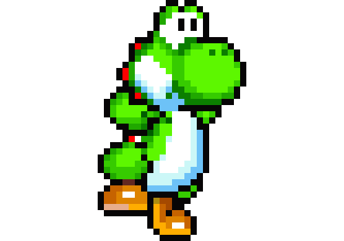
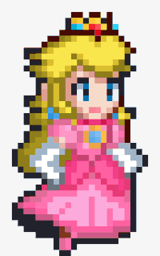
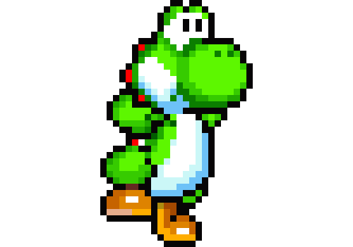
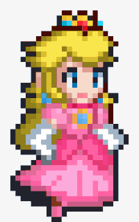
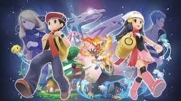
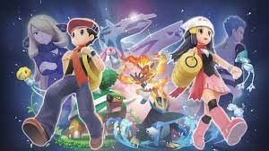

INFORMATION
A primeira aventura de Mario e Luigi para a Super NES levou-os a um local com novas personagens, novas habilidades e muito mais - tornando-se num dos jogos mais vendidos de sempre.
Em Super Mario World os irmãos canalizadores viajam até Dinosaur Land, onde conhecem o seu novo e adorável companheiro Yoshi e onde lutam contra Bowser e os seus subordinados por entre dezenas de níveis complexos e repletos de segredos.
Além de poderes montar Yoshi e engolir os teus inimigos, podes também planar pelos céus com o auxílio da nova Cape Feather e, assim, voar por um mundo de aventuras!
Nota: Super Mario World para o serviço Virtual Console da Wii U é a versão americana do jogo.

GAMES
 

©Maicon C. A. C.
Me encontre por aqui também!


© 2021 Nintendo. Os jogos são propriedade de seus respectivos donos.
Nintendo of America Inc. | A sede está localizada em Redmond, Washington (EUA) | Assistência